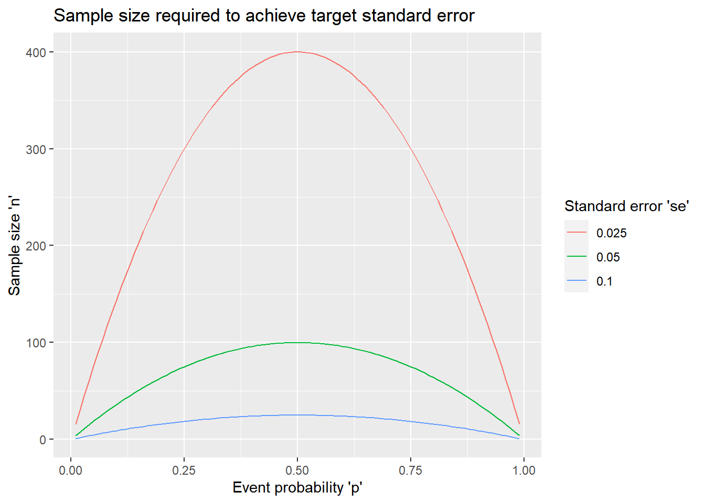
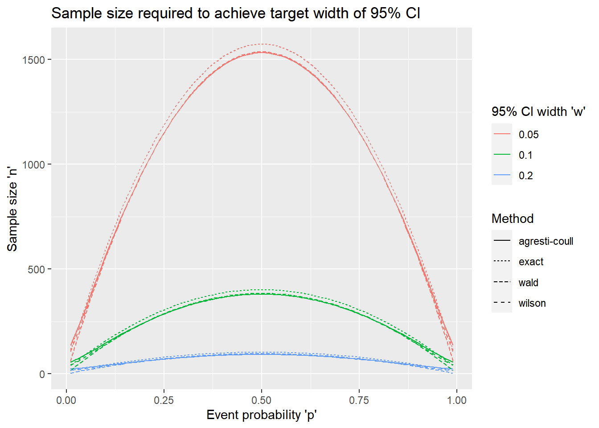
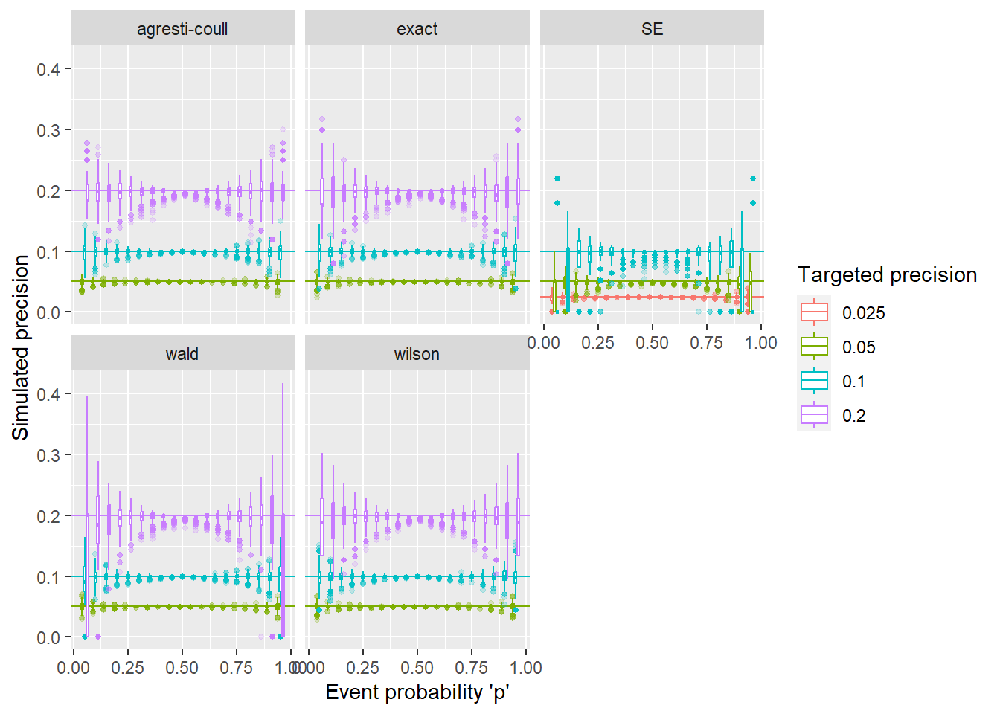

2 One-sample proportion: precision-based sample size
2.1 Example
An educator wants to conduct a survey of first-year medical residents. The survey contains yes/no questions for several specific medical procedures asking whether they would be comfortable performing it without the presence of an attending physician. How many residents should he recruit?
2.2 Data generating mechanism
Independent identically distributed variables \(X_1, \ldots, X_n \sim Bernoulli(p)\) with \(p\), the event probability as the parameter of interest.
It will be estimated as the sample proportion \(\hat{p} = \sum_{i=1}^n X_i / n\). Inference can be based on the exact distribution of \(X = \sum_{i=1}^n X_i \sim Binom(n,p)\) or the asymptotic distribution of \(\hat{p} \sim N(p, \frac{p(1-p)}{n})\).
2.3 Precision measures
2.3.1 Standard error
The standard error of \(\hat{p}\) is
\[\begin{equation} SE(\hat{p}) = \sqrt\frac{p(1-p)}{n}. \end{equation}\]
Solving for \(n\), we have \[\begin{equation} n = \frac{p(1-p)}{SE^2}, \end{equation}\] where \(SE\) is the targeted standard error of the estimate.
#' Calculate standard error for given sample size, or vice versa. Exactly one of 'n' and 'se' has to be NULL
#' p - expected event probability
#' n - sample size
#' se - standard error of estimated probability
se_prop <- function(p, n=NULL, se=NULL){
if (is.null(n) & !is.null(se)){
n <- p * (1-p) / se^2
} else if (!is.null(n) & is.null(se)){
se <- sqrt(p*(1-p)/n)
} else stop("Exactly one of 'n' and 'se' has to be NULL")
res <- list(p = p, n = n, se = se)
res
}2.3.2 Confidence interval
Another way to quantify the precision of the estimated proportion is the width of the resulting two-sided confidence interval, usually at a 95% confidence level. The half of the width of a symmetric 95% confidence interval is also called the margin of error. There are several methods for estimating a confidence interval for a proportion, most of which resulting in non-symmetric intervals.
Confidence interval methods
| Method | \(100(1-\alpha)\)% confidence interval |
|---|---|
| Wald | \(\Big(\hat{p} \pm z_*\sqrt{\frac{\hat{p}(1-\hat{p})}{n}}\Big)\) |
| Wilson | \(\Big(\hat{p}_{adj} \pm \frac{z_*}{1+z_*^2/n} \sqrt{\frac{\hat{p}(1-\hat{p})}{n} + \frac{z_*^2}{4n^2}}\Big)\) |
| Exact binomial | \((b_{1-\frac{\alpha}{2}; n,\hat{p}}; b_{\frac{\alpha}{2}; n,\hat{p}})\) |
| Agresti-Coull | \((\hat{p}_{adj} \pm z_*\sqrt{p_{adj}(1-p_{adj})/n})\) |
where \(\hat{p}_{adj} = \frac{X + 0.5z_*^2}{n + z_*^2}\), \(b_{\frac{\alpha}{2}; n,p}\) is the upper \(\frac{\alpha}{2}\)th quantile of the \(Binomial(n,p)\) distribution, \(z_* = z_\frac{\alpha}{2}\) denotes the upper \(\frac{\alpha}{2}\)th quantile of the standard normal distribution, and \((a \pm d)\) is a shorthand for a symmetric confidence interval \((a-d, a+d)\) with margin of error \(d\).
Base R implements the Wilson (prop.test when used with correct=FALSE) and the exact (binom.test) confidence intervals. The other intervals are available in packages, eg the binom package.1
The calculation of the sample size n or the confidence interval width is implemented in the presize R package.2,3
library(presize)
str(prec_prop)## function (p, n = NULL, conf.width = NULL, conf.level = 0.95, method = c("wilson",
## "agresti-coull", "exact", "wald"), ...)2.4 Getting inputs, worst/best case scenarios
The inputs needed to calculate the sample size are
- a best guess at \(p\), the proportion to be estimated
- the target precision defined as the standard error or confidence interval width
The following plot shows how the sample size depends on these inputs:
# set vector of 'p' & 'se' values to explore
p0 <- seq(0.01, 0.99, by=0.01)
s0 <- c(0.1, 0.05, 0.025)
# Data set with varying 'p' and 'se'
se_settings <- expand.grid(p = p0, se = s0)
# Calculate 'n' for each combination
se_settings <- transform(se_settings, n = se_prop(p=p, se=se)$n)
library(ggplot2)
ggplot(se_settings,
aes(x = p, y = n, color = factor(se), group = se)) +
geom_line() +
scale_color_discrete("Standard error 'se'") +
xlab("Event probability 'p'") +
ylab("Sample size 'n'") +
ggtitle("Sample size required to achieve target standard error")
# set vector of CI width values and CI methods to explore
w0 <- c(0.2, 0.1, 0.05)
m0 <- c("agresti-coull","wald", "wilson","exact")
# Data set with varying 'p' and 'w'
ci_settings <- expand.grid(p = p0, w = w0, Method=m0, stringsAsFactors = FALSE)
# Calculate 'n' for each combination
# prec_prop is not vectorized for this calculation
ci_settings$n <- sapply(1:nrow(ci_settings),
function(idx) with(ci_settings,
prec_prop(p=p[idx],
conf.width = w[idx],
method = Method[idx])$n))
ggplot(ci_settings,
aes(x = p, y = n, color = factor(w), linetype = Method,
group = interaction(w, Method))) +
geom_line() +
scale_color_discrete("95% CI width 'w'") +
xlab("Event probability 'p'") +
ylab("Sample size 'n'") +
ggtitle("Sample size required to achieve target width of 95% CI") 
The following is evident from the plots (and the binomial variance formula):
The largest sample size is needed for \(p=0.5\). If there is no a-prior information about the expected event probability, using the worst-case value of \(p=0.5\) in the calculations ensures that the target precision is reached (or exceeded) regardless of the true value.
The required sample size decreases as we move away from \(p=0.5\) toward either end of the range. So if we can bound that expected event probability away from 0.5, ie \(p < p_L < 0.5\) or \(p > p_H > 0.5\), then we can use \(p_L\) or \(p_H\) in the calculations, and ensure that the target precision is reached (or exceeded) for any true value below \(p_L\) (or above \(p_H\)).
The exact confidence interval method requires the largest sample size. The other methods give very similar results unless \(p\) is very close to 0 and 1.
2.5 Simulation study
The simulation studies are set up to show how the actual confidence interval widths vary from the target values using the ‘n’ values computed above.
library(binom)
# create simulation settings with fewer values for 'p' than in the plot
sim_settings <- rbind(
expand.grid(p = seq(0.05, 0.95, by=0.05),
precision = s0,
method = "SE",
stringsAsFactors = FALSE),
expand.grid(p = seq(0.05, 0.95, by=0.05),
precision = w0,
method = m0,
stringsAsFactors = FALSE))
# function that, given 'p', method and planned sample size, simulates data 'R' times and
# computes the relevant confidence interval width
# output is data frame with one row per simulation
sim_se_ci <- function(precision, p, method, R=1000){
if (method == "SE"){
n <- se_prop(p=p, se=precision)$n
} else {
n <- prec_prop(p=p, conf.width=precision, method = method)$n
}
# round up
n <- ceiling(n)
# simulate data as binomial sum
x <- rbinom(R, size=n, prob=p)
if (method == "SE"){
phat <- x/n
se <- sqrt(phat * (1-phat) / n)
res <- data.frame(p = p, target = precision, method = "SE", n=n, precision = se)
} else {
bmeth <- if (method=="wald") "asymptotic" else method
df <- binom.confint(x=x, n=n, methods=bmeth)
res <- data.frame(p = p, target = precision, method = method, n=n,
precision = df$upper - df$lower)
}
res
}
# run simulation for each value of the grid
set.seed(20576)
sim_list <- lapply(1:nrow(sim_settings),
function(idx) with(sim_settings,
sim_se_ci(precision = precision[idx],
p = p[idx],
method=method[idx])))
sim_res <- do.call(rbind, sim_list)ggplot(sim_res, aes(x=p, y=precision, color = factor(target))) +
facet_wrap(~method) +
geom_hline(aes(yintercept = precision, color=factor(precision)), data=sim_settings) +
geom_boxplot(aes(group=interaction(p, target)), outlier.size = 1, outlier.alpha = 0.2) +
scale_color_discrete("Targeted precision") +
xlab("Event probability 'p'") +
ylab("Simulated precision")